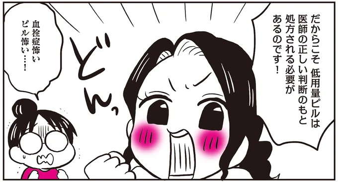
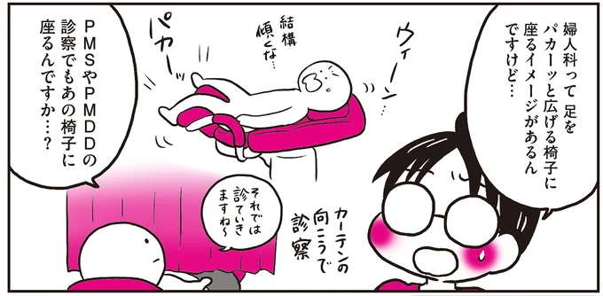
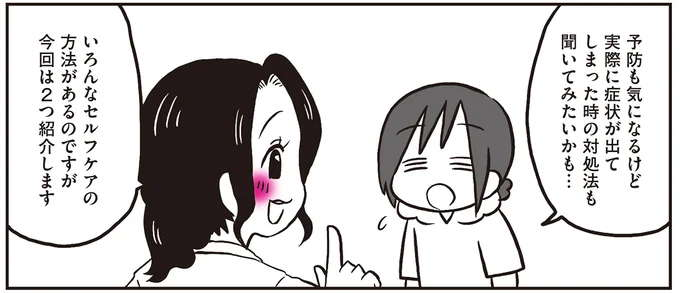
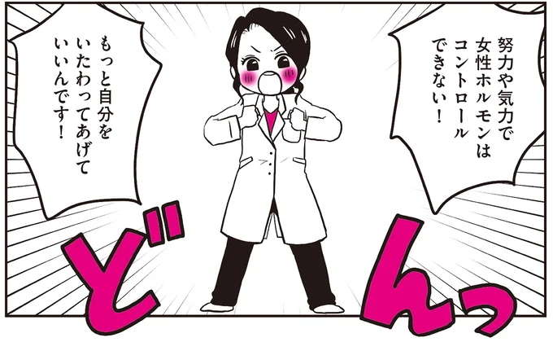
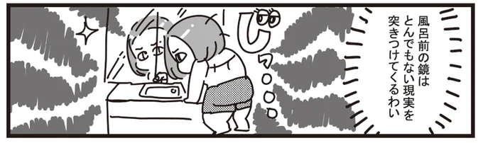
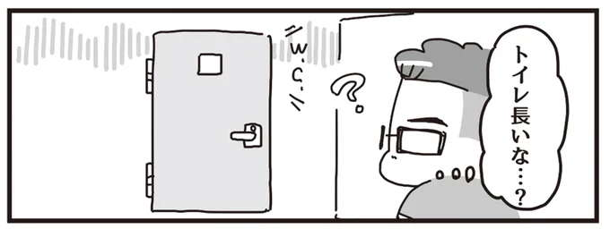
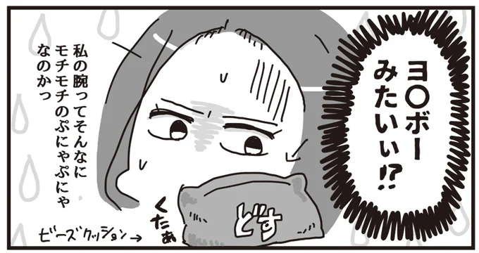
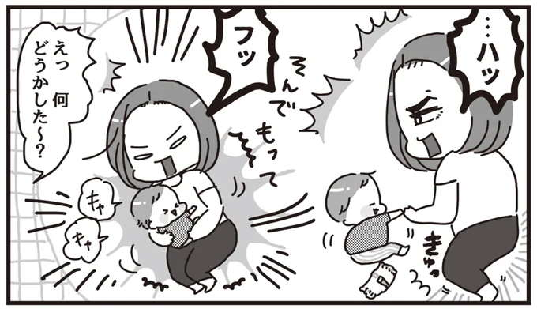
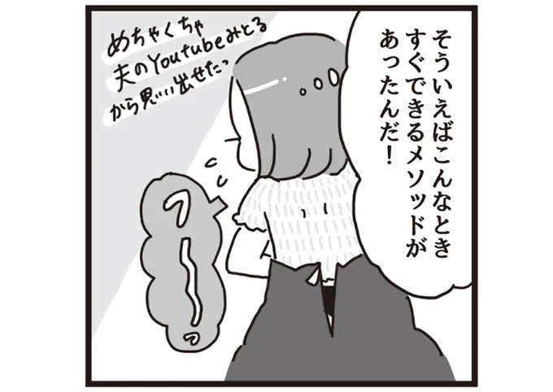
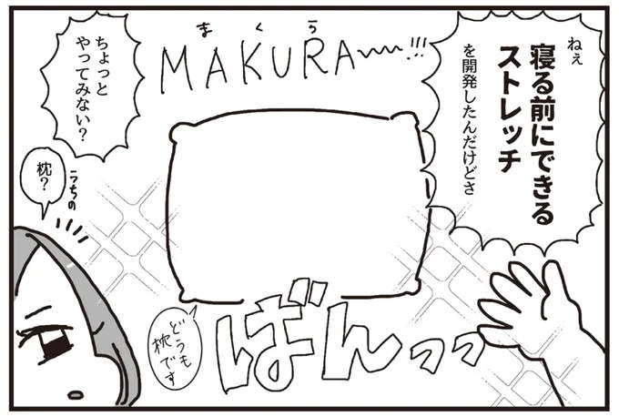

含有关键词“漫画”的文章
1-
 低压扰乱自主神经，浑身不舒服…… 发布日期：
低压扰乱自主神经，浑身不舒服…… 发布日期：“轻量训练是最好的！”“一周只需两天就可以了。”发现团队很惊讶，可以长期持续的肌肉训练……
-

低压扰乱自主神经，浑身不舒服…… 发布日期：低剂量药丸和地诺孕素的优缺点。寻找适合您的治疗方法...
-

低压扰乱自主神经，浑身不舒服…… 发布日期：经前综合症 (PMS)/经前抑郁症 (PMDD) 采用什么治疗方法？低剂量药丸的影响以及如何服用/分娩......
-

低压扰乱自主神经，浑身不舒服…… 发布日期：缓解经前综合症症状！通过自我护理来照顾自己，您可以轻松地在日常生活中练习/产妇......
-

低压扰乱自主神经，浑身不舒服…… 发布日期：“我是一个经前怪物，我向我的妇产科医生询问如何克服经前综合症和经前抑郁症”
-
低压扰乱自主神经，浑身不舒服…… 发布日期：
什么是经前综合症/经前抑郁障碍？您是否有无法通过努力或精力控制的月经症状？
-

低压扰乱自主神经，浑身不舒服…… 发布日期：如果您对自己胖乎乎的肚子感到绝望……这里有一项令人耳目一新的锻炼方法，您可以一边泡在热水里一边做……
-

低压扰乱自主神经，浑身不舒服…… 发布日期：您可以在使用浴室时或外出前执行此操作。小脸拉伸/改善面部表情的裤子......
-

低压扰乱自主神经，浑身不舒服…… 发布日期：如果那个舒适的垫子像它一样软的话……我可以在倒垃圾时用我的上臂……
-

低压扰乱自主神经，浑身不舒服…… 发布日期：照顾好自己的同时，挤压你的屁股。提臀/裤子即使在握着的情况下也可以完成...
-

低压扰乱自主神经，浑身不舒服…… 发布日期：尺寸是不是有点紧？方便的腹部除皱拉伸/腹部...
-

低压扰乱自主神经，浑身不舒服…… 发布日期：睡觉或看电视时有效拉伸臀部和大腿内侧/马虎之神...